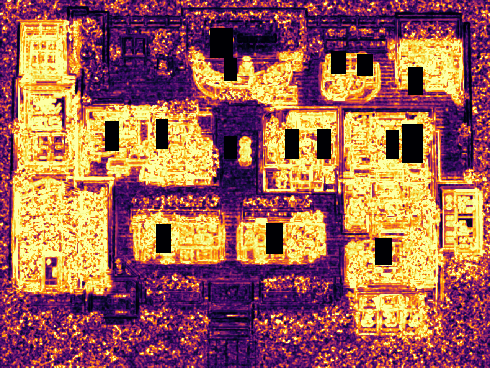

DIRECT MASKED SSIM / TARGET 60%
—- MASKED SSIM
- —
- EDGE F1 / DIAGNOSTIC
- —
- PIXEL COMPOSITE / DIAGNOSTIC
- —
- METHOD
- office-similarity-v2-direct-ssim



OBJECT & ORIENTATION LEDGER
数字の奥にある未解決箇所
| ZONE | SSIM | CONTENT | ORIENTATION |
|---|
VERDANT / FIDELITY DESK
DIRECT MASKED SSIM / TARGET 60%
—
OBJECT & ORIENTATION LEDGER
| ZONE | SSIM | CONTENT | ORIENTATION |
|---|